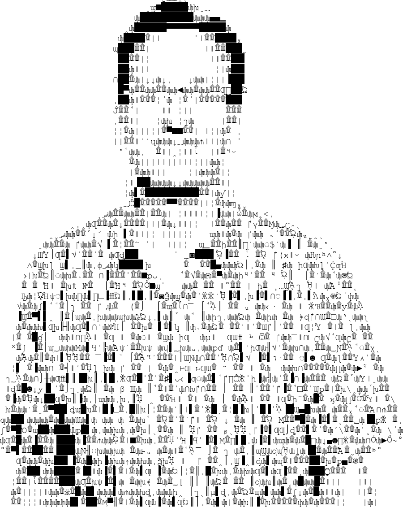
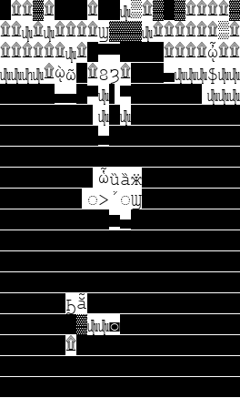

Financial data & reconciliation · Utah
I balance billion-dollar checkbooks.
For 13 years at Overstock.com, I was the person teams brought in when the numbers didn't tie. I designed the reconciliations, wrote the matching logic, and traced every gap back to its cause before it reached an auditor.

I'm a financial data analyst with more than 20 years of SQL behind me. Most of that time has gone into one kind of problem: two sets of numbers that should agree, and don't.
At Overstock.com (later Beyond, Inc.) I owned cash and transaction reconciliation for a public e-commerce company whose money moved through card processors, PayPal and Venmo, marketplace partners, gift cards, a loyalty program, and even Bitcoin and Ethereum. I built daily reconciliations that tied each settlement back to the individual order line, and I worked side by side with accounting, external auditors, legal and fraud teams.
I like work where being careful really matters. I'm looking for remote individual-contributor or contract roles in financial reconciliation, payments data and finance analytics.
| 95%+ | of gift cards matched to their source transactions when I rebuilt years of history for unclaimed-property litigation, from records that never separated purchased cards from promotional ones |
| 10%→95% | month-end report automation, after redesigning the whole month-end reporting workflow |
| 130+ | financial reports moved from Teradata to Google BigQuery while keeping accounting and audit reporting accurate |
| 30 days | of missed charges recovered after I found a silently failed process that had stopped billing for unreturned replacements |
A program that redraws any picture using only the characters of a font. It renders every character a font has, sometimes tens of thousands, and for each patch of the image picks whichever letter or symbol looks most like it. I wrote the first version in 2019 and have rebuilt it since.
Try this: the image on the right is the Mona Lisa, made entirely of Courier characters. Drag the slider to zoom in. Somewhere along the way she disappears, and up close it's just blocks and stray letters.

A tool that works out which videos in a big library are actually worth shrinking. It estimates the space each file would free, test-encodes short clips and scores their quality, and only replaces originals after you've approved them. It's the habit from my day job applied at home: measure first, then act on what the numbers say.